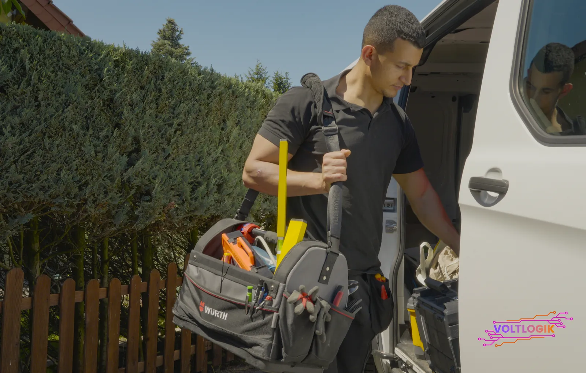

Ihr Elektro-Fachbetrieb für Wallbox, PV & Wärmepumpe in Berlin und Brandenburg
Von der Wallbox für Ihr E-Auto über die komplette PV-Anlage bis zum Wärmepumpen-Anschluss: Wir installieren fachgerecht, prüfen nach DIN VDE 0100-600 und kümmern uns um die Anmeldung beim Netzbetreiber.
Unsere Leistungen
Erneuerbare Energie und klassische Elektrotechnik aus einer Hand.
Wallbox-Installation (11 kW & 22 kW)
Installation Ihrer E-Auto-Wallbox in 11- oder 22-kW-Ausführung. Wallboxen bis 11 kW sind beim Netzbetreiber meldepflichtig, 22-kW-Wallboxen brauchen vorher seine Zustimmung. Beides übernehmen wir für Sie.
PV-Anlagen komplett
Planung und Installation Ihrer Photovoltaikanlage, von der Montage bis zur Inbetriebnahme und Anmeldung.
PV-Teilinstallation (AC)
Sie haben die DC-Montage schon selbst erledigt? Wir übernehmen den AC-Anschluss, die Prüfung und die Anmeldung.
Speichererweiterung
Wir erweitern Ihre bestehende PV-Anlage um einen Batteriespeicher.
Notstrom-Lösungen
Bei Stromausfall weiter Strom: Notstromboxen für dreiphasige PV-Wechselrichter, die das ganze Haus versorgen, oder einphasige Notstrom-Umschaltungen, mit denen ein mobiler AC-Speicher Ihr Haus im Inselbetrieb versorgt. Konzept und Umsetzung aus einer Hand.
Wärmepumpen-Anschluss
Elektrischer Anschluss Ihrer Wärmepumpe, fachgerecht und inklusive Anmeldung beim Netzbetreiber.
Anmeldung & VDE-Prüfung
Anmeldung anmeldepflichtiger Geräte sowie Prüfung nach DIN VDE 0100-600 mit Prüfprotokoll.
Zählerschrank & Unterverteilung
Komplette Sanierung oder neuer Zählerschrank: Wir übernehmen die alten Stromkreise, setzen einen neuen Zählerschrank und nutzen den alten bei Bedarf als Unterverteilung weiter. Natürlich auch ganz normale Unterverteilungen.
SLS & Überspannungsschutz
Nachrüstung von SLS-Schaltern und Überspannungsschutz, wie es die Technischen Anschlussbedingungen (TAB) der meisten Netzbetreiber vorschreiben.
Fehlersuche & Reparaturen
Strom weg, Sicherung fliegt raus oder eine Steckdose ist defekt? Wir finden den Fehler und reparieren ihn in Ihrem Haushalt.
Elektroinstallation
Klassische Elektroarbeiten im Alt- und Neubau: Steckdosen, Leitungen, Erweiterungen und mehr.
So einfach geht's
In vier Schritten zu Ihrer fertigen Anlage.
Anfrage
Sie melden sich per Telefon, WhatsApp oder E-Mail und schildern kurz Ihr Vorhaben.
Beratung & Angebot
Wir klären die Details und erstellen Ihnen ein transparentes Angebot.
Installation
Wir führen die Arbeiten fachgerecht aus und prüfen nach DIN VDE 0100-600.
Anmeldung & Übergabe
Wir übernehmen die Anmeldung beim Netzbetreiber und übergeben Ihnen alle Unterlagen.
Ihr Elektriker aus Oranienburg
Ich bin Daniel Beiersdorf, Meister und Geschäftsführer von Voltlogik. Ich nehme mir für jeden Auftrag die Zeit, die er braucht, denn bei Strom zählen Sicherheit und Zuverlässigkeit.
Mehr über uns
Das sagen unsere Kunden
Bewertungen von MyHammer.
„Entspricht einfach alle Erwartungen und hebt sich von der Masse komplett ab, hält sich an absprachen und gibt Ideen und Tipps, die er auch umsetzen kann. Für jede Angelegenheit würde ich seine Leistung jederzeit in Anspruch nehmen.“
„Zuverlässige Arbeit. Alle Absprachen eingehalten, klare Kommunikation, verlässlich in Terminen. Jederzeit gerne wieder!“
„Ich bin sehr zufrieden. Daniel hat meine Erwartungen vollständig erfüllt und wird von mir sehr gerne meinem Freundeskreis empfohlen.“
Häufige Fragen
Kurz beantwortet.
In welchen Orten ist Voltlogik im Einsatz?
Wir sitzen in Oranienburg und arbeiten in Berlin und Brandenburg im Umkreis von rund 100 km, zum Beispiel in Hohen Neuendorf, Birkenwerder, Bernau bei Berlin, Panketal, Biesenthal, Kleinmachnow und Fürstenberg/Havel.
Muss ich meine Wallbox beim Netzbetreiber anmelden?
Ja. Wallboxen bis 11 kW sind beim Netzbetreiber meldepflichtig. Wallboxen mit mehr als 11 kW, zum Beispiel 22 kW, brauchen vorher die Zustimmung des Netzbetreibers. Die Anmeldung übernehmen wir für Sie.
Übernehmt ihr auch nur den AC-Anschluss meiner PV-Anlage?
Ja. Wenn Sie die DC-Montage selbst erledigt haben, übernehmen wir den AC-Anschluss, die Prüfung nach DIN VDE 0100-600 und die Anmeldung beim Netzbetreiber.
Kann ich an meine bestehende PV-Anlage einen Speicher nachrüsten?
Ja. Wir erweitern bestehende PV-Anlagen um einen Batteriespeicher. Ob und wie das bei Ihrer Anlage geht, klären wir vorab mit Ihnen.
Kann mein Haus bei einem Stromausfall weiter Strom bekommen?
Ja, mit einer Notstrom-Lösung. Bei PV-Anlagen mit dreiphasigem Wechselrichter versorgt eine Notstrombox das ganze Haus. Alternativ kann eine einphasige Notstrom-Umschaltung Ihr Haus über einen mobilen AC-Speicher im Inselbetrieb versorgen. Wir erstellen das passende Konzept und setzen es um.
Brauche ich einen SLS-Schalter und Überspannungsschutz?
Die Technischen Anschlussbedingungen (TAB) der meisten Netzbetreiber schreiben das vor. Ob bei Ihnen nachgerüstet werden muss, prüfen wir vor Ort.
Wie stelle ich eine Anfrage?
Am einfachsten per Telefon, WhatsApp oder E-Mail an kontakt@voltlogik.de. Nennen Sie uns kurz Ort und Vorhaben und schicken Sie gerne ein paar Fotos vom Zählerschrank mit.
Bereit für Ihr Projekt?
Schildern Sie uns kurz Ihr Vorhaben. Wir melden uns zeitnah.